<ion-content no-bounce class="gradient-background">

  <ion-grid no-padding>
    <ion-row align-items-center>
      <ion-col>

        

        <h1>Svenska Bad</h1>

        <div id="buttons-container">
          <button ion-button large color="light" round icon-left id="map-button" [navPush]="mapPage">
            <ion-icon name="search"></ion-icon>
            Hitta badplats
          </button>

          <button ion-button round icon-left color="homeSubButton" id="favorite-button" [navPush]="favoritesPage">
            <ion-icon name="heart"></ion-icon>
            Mina favoriter
          </button>

          <button ion-button round icon-left color="homeSubButton" id="about-button" [navPush]="aboutPage">
            <ion-icon name="information-circle"></ion-icon>
            Om appen
          </button>

        </div>

      </ion-col>
    </ion-row>
  </ion-grid>

  <!-- Water animation waves -->
  <div class='wave -one'></div>
  <div class='wave -two'></div>
  <div class='wave -three'></div>

</ion-content>
